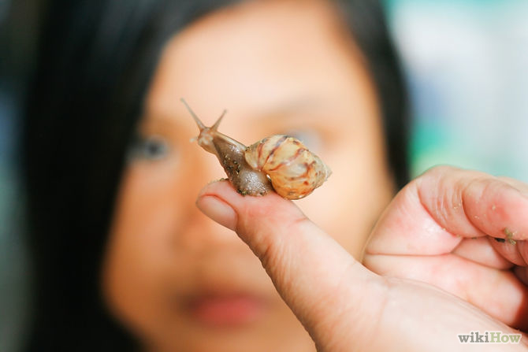
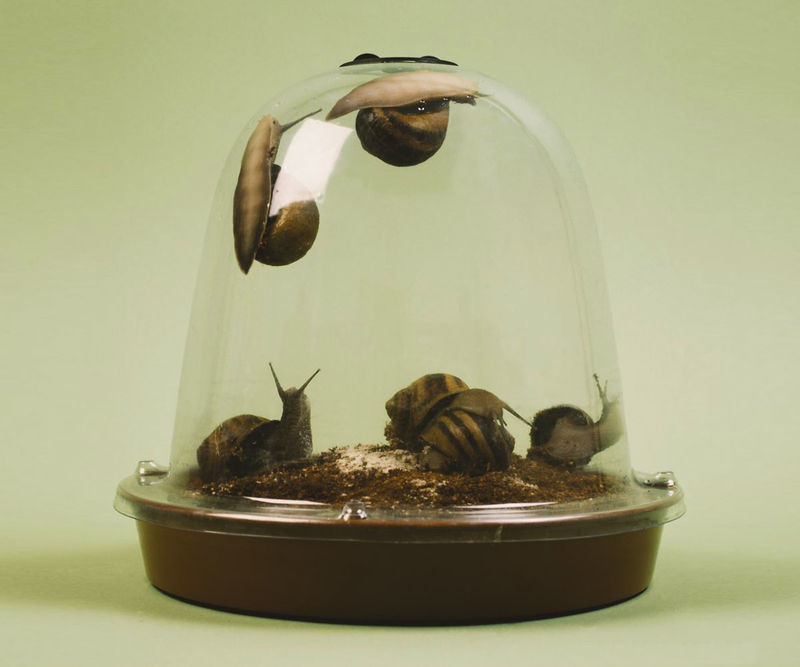
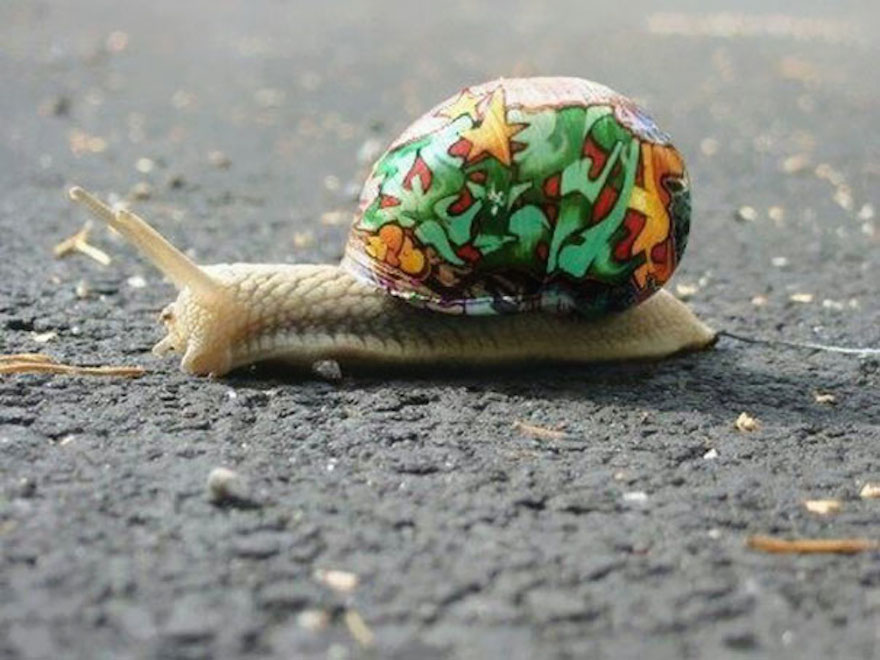
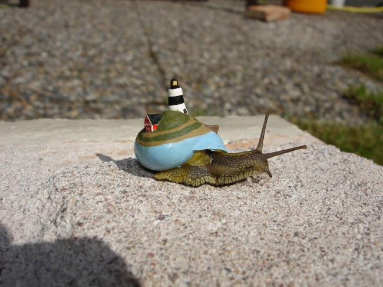

 Cornu aspersum, known by the common name garden snail, is a species of land snail. As such it is a terrestrial pulmonate gastropod mollusc in the family Helicidae, which include the most commonly familiar land snails. Of all terrestrial molluscs, this species may well be the most widely known. In English texts it was classified under the name Helix aspersa for over two centuries, but the prevailing classification now places it in the genus Cornu.
Cornu aspersum is native to the Mediterranean area and western Europe, but whether deliberately or accidentally, humans have spread it to temperate and subtropical areas worldwide. The snail is relished as a food item in some areas, but it is also widely regarded as a pest in gardens and in agriculture, especially in regions where it has been introduced accidentally and where snails are not usually considered to be a menu item.
These snails are typically found after it has rained or around twilight. However, during hot weather these hermaphrodites will usually stay hidden. In suburban areas, they can be commonly found feeding in lawns and flower beds after lawn sprinkler systems have soaked these areas with water after sunset.
The adult bears a hard, thin calcareous shell 25–40 mm in diameter and 25–35 mm high, with four or five whorls. The shell is variable in color and shade but generally is dark brown, brownish golden, or chestnut with yellow stripes, flecks, or streaks (characteristically interrupted brown colour bands).The aperture is large and characteristically oblique, its margin in adults is white and reflected.
The body is soft and slimy, brownish-grey, and the animal retracts itself entirely into the shell when inactive or threatened. When injured or badly irritated the animal produces a defensive froth of mucus that might repel some enemies or overwhelm aggressive small ants or the like. It has no operculum; during dry or cold weather it seals the aperture of the shell with a thin membrane of dried mucus; the term for such a membrane is epiphragm. The epiphragm helps the snail retain moisture and protects it from small predators such as some ants.
The snail's quiescent periods during heat and drought are known as aestivation; its quiescence during winter is known as overwintering. When overwintering, Cornu aspersum avoids the formation of ice in its tissues by altering the osmotic components of its blood (or haemolymph); this permits it to survive temperatures as low as -5 °C (23 °F).[3] During aestivation, the mantle collar has the ability to change its permeability to water.[4] The snail also has an osmoregulatory mechanism that prevents excessive absorption of water during hibernation. These mechanisms allow Cornu aspersum to avoid either fatal desiccation or hydration during months of either kind of quiescence.
During times of activity the snail's head and "foot" or "belly" emerge. The head bears four tentacles; the upper two are larger and bear eye-like light sensors, and the lower two are tactile and olfactory sense organs. The snail extends the tentacles by internal pressure of body fluids, and retracts all four tentacles into the head by invagination when threatened or otherwise retreating into its shell. The mouth is located beneath the tentacles, and contains a chitinous radula with which the snail scrapes and manipulates food particles.
Here's a great site to advise how to choose your snail: http://www.wikihow.com/Keep-a-Pet-Snail.
No comments yet.